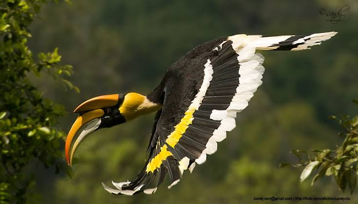

Great hornbill
Birds
The great hornbill also known as the concave-casqued hornbill, great Indian hornbill or great pied hornbill, is one of the larger members of the hornbill family. It is found in the Indian subcontinent and Southeast Asia.
Its impressive size and colour have made it important in many tribal cultures and rituals.
Scientific name: Buceros bicornis
Family: Bucerotidae
Kingdom: Animalia
Length: 95 – 120 cm
Mass: 2.8 kg (Adult)
Class: Aves
Biology of Great hornbill
Taxonomy
The species was formerly broken into subspecies cavatus, from the Western Ghats, and homrai, the nominate form from the sub-Himalayan forests. The subspecies from Sumatra was sometimes called cristatus.
Variation across populations is mainly in size, Himalayan birds being larger than those from further south, and the species is now usually considered monotypic.
Like other members of the hornbill family, they have highly pneumatized bones, with hollow air cavities extending to the tips of the wing bones. This anatomical feature was noted by Richard Owen, who dissected a specimen that died at the Zoological Society of London in 1833.
Males are said to be solitary during the breeding season but form small flocks in winter. Males may however distribute themselves close together and like other bustards they are believed to use a mating system that has been termed as an "exploded or dispersed lek". The male is polygamous.
Distribution and habitat
Great hornbills are found in the forests of India, Bhutan, Nepal, Mainland Southeast Asia, Indonesian Island of Sumatra and North eastern region of India.
The distribution of the species is fragmented over its range in the Indian subcontinent and Southeast Asia. In the subcontinent they are found in a few forest areas in the Western Ghats and in the forests along the Himalayas.
Deforestation has reduced their range in many parts of India such as in the Kolli hills where they were recorded in the 1860s.
Their distribution extends into Thailand, Burma, Malaya, and Sumatra. A small feral population is found in Singapore. Their habitat is dense old growth (unlogged) forests in hilly regions.
They appear to be dependent on large stretches of forest, unlike many of the smaller hornbills.
In Thailand the home range of males was found to be about 3.7 km2 during the breeding season and about 14.7 km2 during the non-breeding season.
Food and feeding
Great hornbills are usually seen in small parties, with larger groups sometimes aggregating at fruit trees. A congregation of 150 to 200 birds has been recorded in southeastern Bhutan.
In the wild, the great hornbill's diet consists mainly of fruit. Figs are particularly important as a food source. Vitex altissima has been noted as another important food source.
Great hornbills also forage on lipid-rich fruits of the families Lauraceae and Myristicaceae such as Persea, Alseodaphne and Myristica.
They obtain the water that they need entirely from their diet of fruits. They are important dispersers of many forest tree species.
They will also eat small mammals, birds, small reptiles and insects. Lion-tailed macaques have been seen to forage alongside these hornbills.
Breeding
During the breeding season (January to April) great hornbills become very vocal. They make loud duets, beginning with a loud "kok" given about once a second by the male, to which the female joins in.
The pair then calls in unison, turning into a rapid mixture of roars and barks. They prefer mature forests for nesting. Large, tall and old trees, particularly emergents that rise above the canopy, seem to be preferred for nesting.
They form monogamous pair bonds and live in small groups of 2-40 individuals. Group courtship displays involving up to 20 birds have been observed.
The female hornbill builds a nest in the hollow of a large tree trunk, sealing the opening with a plaster made up mainly of feces. She remains imprisoned there, relying on the male to bring her food, until the chicks are half developed.
During this period the female undergoes a complete moult.